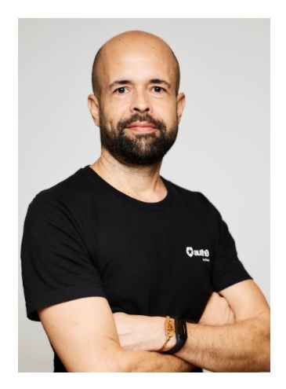

Analista de Sistemas — Especialista en Marketing de Contenidos
Más de 10 años construyendo contenido para developers y audiencias tech, con foco en contenido escrito y creación de videos, experiencias web y sistemas digitales para audiencias B2B de tecnología.
📍 Corrientes, Argentina — trabajando globalmente, en remoto (¡y me encanta!)
Estratega, constructor y narrador — tendiendo puentes entre la tecnología y las personas.

Profesional tecnológico multidisciplinario con más de 10 años de experiencia en estrategia de contenido para developers, desarrollo web, testing manual de software y mentoría académica.
Habilidades en plataformas CMS (Contentful, WordPress, Joomla), analítica y diseño centrado en el usuario. Comunicador sólido con mentalidad estratégica y pasión por mejorar las experiencias digitales.
Experiencia comprobada en la gestión de operaciones de contenido de extremo a extremo para audiencias B2B de tecnología — planificación editorial, producción de contenido técnico, flujos de trabajo asistidos por IA e informes de rendimiento.
Buscando contribuir en un equipo de alto rendimiento de Contenido o Developer Experience en una empresa B2B de tecnología enfocada en innovación, storytelling e impacto medible.
Más de una década construyendo, testeando, enseñando y estrategizando en tecnología y academia.
Lideré la estrategia y operaciones de contenido para plataformas orientadas a developers en un entorno global B2B de tecnología, siendo responsable del ciclo de vida del contenido de extremo a extremo.
Testing manual de extremo a extremo para garantizar la confiabilidad del software y el cumplimiento de requisitos funcionales en aplicaciones bancarias de misión crítica.
Diseñé y desarrollé sitios web responsivos, identidades de marca y experiencias digitales para clientes, gestionando el ciclo completo del proyecto desde el discovery hasta la entrega.
Dicté Arquitectura de Computadoras para estudiantes de primer año de Ingeniería en Sistemas y lideré programas de mentoría para apoyar la transición académica y el desarrollo profesional.
Un conjunto de herramientas amplio y multidisciplinario construido en contenido, tecnología, diseño y personas.
Las cosas que me hacen ser yo — fuera del trabajo.
Abierto a nuevas oportunidades, colaboraciones y conversaciones sobre contenido, tecnología y todo lo que hay en el medio.